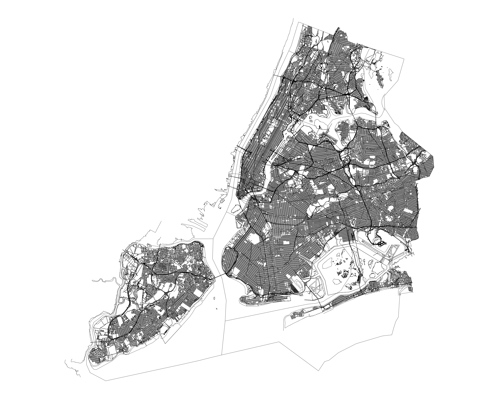
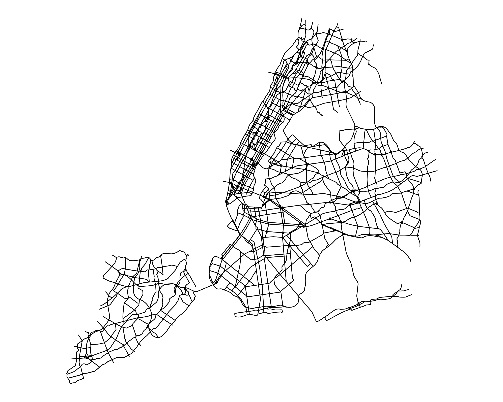
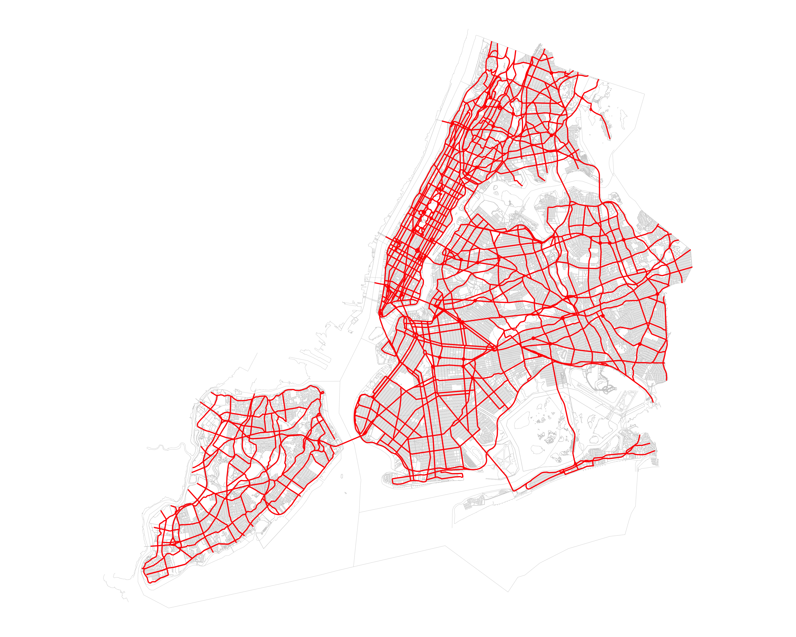
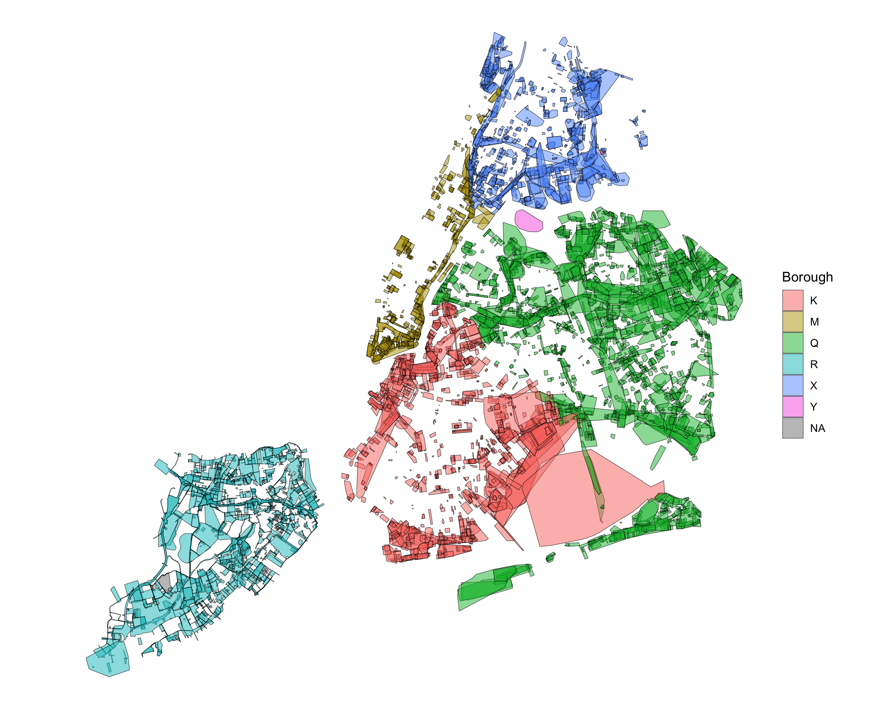
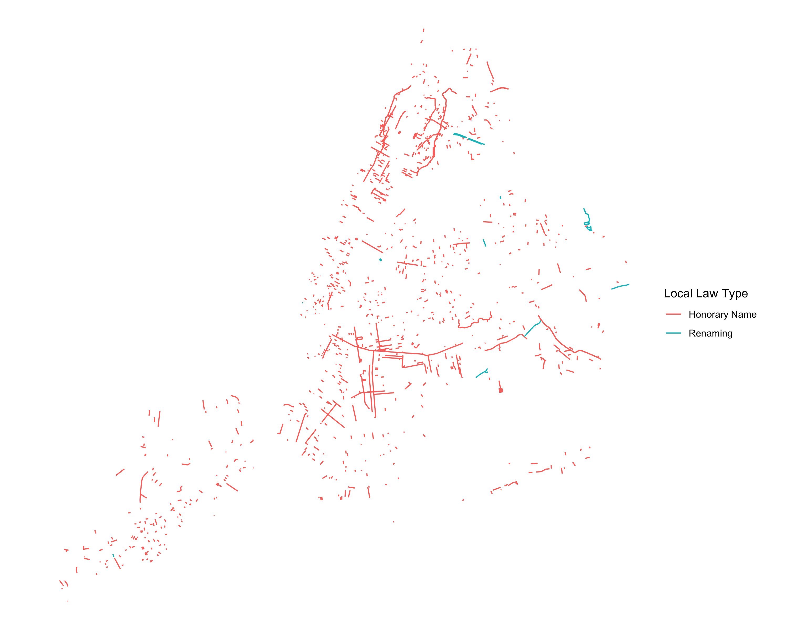
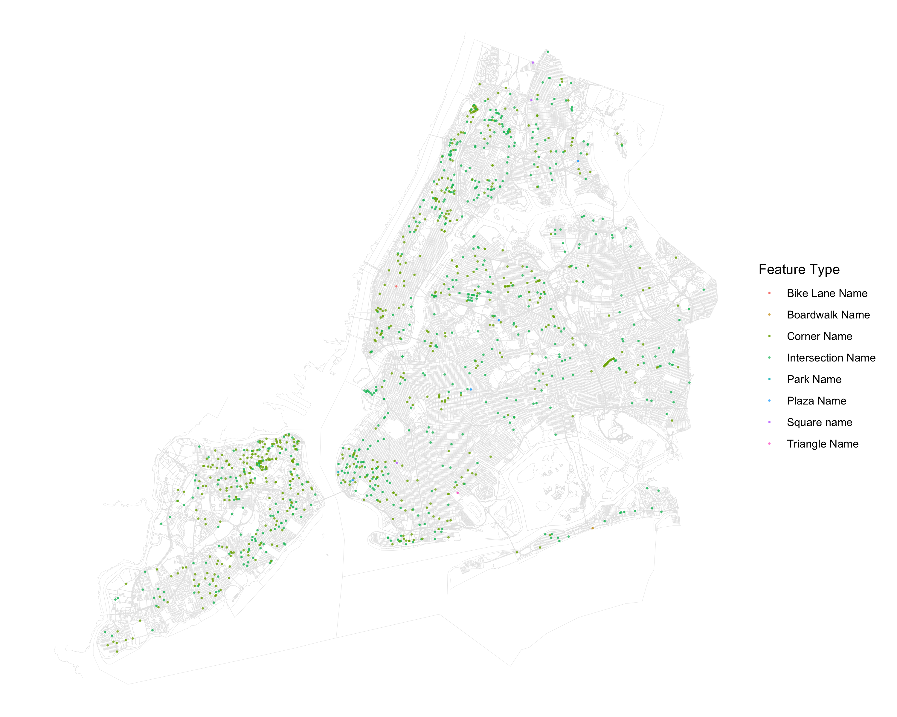

Provides sf objects from the New York City Digital City Map (DCM) for drawing street maps and working with NYC street data.
Installation
You can install the development version of nycdcm like so:
remotes::install_github("kjhealy/nycdcm")Alternatively, install this package from my r-universe:
install.packages(
"nycdcm",
repos = c("https://kjhealy.r-universe.dev", "https://cloud.r-project.org")
)Including https://cloud.r-project.org ensures dependencies on CRAN are resolved automatically.
Load
library(tidyverse)
#> ── Attaching core tidyverse packages ──────────────────────── tidyverse 2.0.0 ──
#> ✔ dplyr 1.2.1 ✔ readr 2.2.0
#> ✔ forcats 1.0.1 ✔ stringr 1.6.0
#> ✔ ggplot2 4.0.2 ✔ tibble 3.3.1
#> ✔ lubridate 1.9.5 ✔ tidyr 1.3.2
#> ✔ purrr 1.2.1
#> ── Conflicts ────────────────────────────────────────── tidyverse_conflicts() ──
#> ✖ dplyr::filter() masks stats::filter()
#> ✖ dplyr::lag() masks stats::lag()
#> ℹ Use the conflicted package (<http://conflicted.r-lib.org/>) to force all conflicts to become errors
library(sf)
#> Linking to GEOS 3.13.0, GDAL 3.8.5, PROJ 9.5.1; sf_use_s2() is TRUE
library(nycdcm)What’s included
NYC Digital City Map Street Layer
The main DCM layer containing street data for all of New York City.
nyc_dcm_sf
#> Simple feature collection with 67979 features and 5 fields
#> Geometry type: MULTILINESTRING
#> Dimension: XY
#> Bounding box: xmin: 902501.3 ymin: 113279.3 xmax: 1067481 ymax: 275335.5
#> Projected CRS: NAD83 / New York Long Island (ftUS)
#> First 10 features:
#> borough feat_type jurisdicti record_st edit_date
#> 1 Manhattan Infrastructure <NA> <NA> 2023-01-27
#> 2 Manhattan Unmapped_St <NA> <NA> 2021-07-09
#> 3 Manhattan Infrastructure <NA> <NA> 2023-01-27
#> 4 Manhattan Infrastructure <NA> <NA> 2023-01-27
#> 5 Manhattan Infrastructure <NA> <NA> 2023-01-27
#> 6 Manhattan Infrastructure <NA> <NA> 2023-01-27
#> 7 Manhattan Infrastructure <NA> <NA> 2023-01-27
#> 8 Manhattan Infrastructure <NA> <NA> 2023-01-27
#> 9 Manhattan Infrastructure <NA> <NA> 2023-01-27
#> 10 Manhattan Infrastructure <NA> <NA> 2023-01-27
#> geometry
#> 1 MULTILINESTRING ((1006326 2...
#> 2 MULTILINESTRING ((990634.3 ...
#> 3 MULTILINESTRING ((1003395 2...
#> 4 MULTILINESTRING ((985815.6 ...
#> 5 MULTILINESTRING ((1000049 2...
#> 6 MULTILINESTRING ((991519.2 ...
#> 7 MULTILINESTRING ((1003589 2...
#> 8 MULTILINESTRING ((1005369 2...
#> 9 MULTILINESTRING ((1006040 2...
#> 10 MULTILINESTRING ((993156.5 ...
ggplot(nyc_dcm_sf) +
geom_sf(linewidth = 0.1) +
theme_void()
NYC Digital City Map Arterials and Major Streets
Major streets and arterials layer from the DCM.
nyc_dcm_arterial_sf
#> Simple feature collection with 740 features and 6 fields
#> Geometry type: MULTILINESTRING
#> Dimension: XY
#> Bounding box: xmin: 913281.5 ymin: 120286.1 xmax: 1067383 ymax: 271908.9
#> Projected CRS: NAD83 / New York Long Island (ftUS)
#> First 10 features:
#> borough boro_code route_name route_type
#> 1 Manhattan 1 2 Avenue Major Streets
#> 2 Manhattan 1 10 Avenue Major Streets
#> 3 Manhattan 1 Amsterdam Avenue Major Streets
#> 4 Manhattan 1 Church Street Major Streets
#> 5 Manhattan 1 Dyckman Street Major Streets
#> 6 Manhattan 1 East 34 Street Major Streets
#> 7 Manhattan 1 East 42 Street Major Streets
#> 8 Manhattan 1 East 57 Street Major Streets
#> 9 Manhattan 1 East 72 Street Major Streets
#> 10 Manhattan 1 East 79 Street Major Streets
#> route_sub route_stat geometry
#> 1 Major street to be improved Existing MULTILINESTRING ((986738 20...
#> 2 Major Street Existing MULTILINESTRING ((981445.2 ...
#> 3 Major Street Existing MULTILINESTRING ((987680.5 ...
#> 4 Major Street Existing MULTILINESTRING ((981013.6 ...
#> 5 Major Street Existing MULTILINESTRING ((1005561 2...
#> 6 Major Street Existing MULTILINESTRING ((988527.9 ...
#> 7 Major Street Existing MULTILINESTRING ((989545.4 ...
#> 8 Major Street Existing MULTILINESTRING ((991461.4 ...
#> 9 Major Street Existing MULTILINESTRING ((993379.4 ...
#> 10 Major Street Existing MULTILINESTRING ((994296.5 ...
ggplot(nyc_dcm_arterial_sf) +
geom_sf() +
theme_void()
Combined View
ggplot() +
geom_sf(data = nyc_dcm_sf, color = "gray80", linewidth = 0.1) +
geom_sf(data = nyc_dcm_arterial_sf, color = "red", linewidth = 0.5) +
theme_void()
NYC Digital City Map City Map Alterations
City map alterations documenting changes approved by the City Planning Commission.
nyc_dcm_alteration_sf
#> Simple feature collection with 5105 features and 19 fields
#> Geometry type: MULTIPOLYGON
#> Dimension: XY
#> Bounding box: xmin: 912656.8 ymin: 120319.5 xmax: 1067272 ymax: 272307.9
#> Projected CRS: NAD83 / New York Long Island (ftUS)
#> First 10 features:
#> boro_code app_num project_nm filed_stat status effect_dt bp_num cc_res_num
#> 1 Q 5622 <NA> 1 14 1949-09-08 <NA> 0
#> 2 X 9692 <NA> 1 14 1953-05-15 11372 0
#> 3 X 10007 <NA> 1 14 1953-10-17 11387 0
#> 4 X 10059 <NA> 1 14 1954-04-20 11392 0
#> 5 Q 10068 <NA> 1 14 1954-10-20 3679 0
#> 6 Q 10112 <NA> 1 14 1953-11-20 3688 0
#> 7 K 10150 <NA> 1 14 1953-12-19 A-779 0
#> 8 K 1016 <NA> 1 14 1939-12-30 L-917 0
#> 9 Q 10161 <NA> 1 14 1955-11-03 3655 0
#> 10 K 10313 <NA> 1 14 1954-02-18 E-803 0
#> zr_update cert_date chg_type altmappdf
#> 1 0 -001-11-30 Unknown cp5622.pdf
#> 2 0 -001-11-30 Unknown cp9692.pdf
#> 3 0 -001-11-30 Unknown cp10007.pdf
#> 4 0 -001-11-30 Unknown cp10059.pdf
#> 5 0 -001-11-30 Street Line cp10068.pdf
#> 6 0 -001-11-30 Unknown cp10112.pdf
#> 7 0 -001-11-30 Unknown cp10150.pdf
#> 8 0 -001-11-30 Unknown cp1016.pdf
#> 9 0 -001-11-30 Unknown cp10161.pdf
#> 10 0 -001-11-30 Easement cp10313.pdf
#> altmap_link
#> 1 https://nycdcp-dcm-alteration-maps.nyc3.digitaloceanspaces.com/cp5622.pdf
#> 2 https://nycdcp-dcm-alteration-maps.nyc3.digitaloceanspaces.com/cp9692.pdf
#> 3 https://nycdcp-dcm-alteration-maps.nyc3.digitaloceanspaces.com/cp10007.pdf
#> 4 https://nycdcp-dcm-alteration-maps.nyc3.digitaloceanspaces.com/cp10059.pdf
#> 5 https://nycdcp-dcm-alteration-maps.nyc3.digitaloceanspaces.com/cp10068.pdf
#> 6 https://nycdcp-dcm-alteration-maps.nyc3.digitaloceanspaces.com/cp10112.pdf
#> 7 https://nycdcp-dcm-alteration-maps.nyc3.digitaloceanspaces.com/cp10150.pdf
#> 8 https://nycdcp-dcm-alteration-maps.nyc3.digitaloceanspaces.com/cp1016.pdf
#> 9 https://nycdcp-dcm-alteration-maps.nyc3.digitaloceanspaces.com/cp10161.pdf
#> 10 https://nycdcp-dcm-alteration-maps.nyc3.digitaloceanspaces.com/cp10313.pdf
#> scanned track_num source map_series map_cabine
#> 1 Yes 5622 Consultant CAD data, convex hulls 1937-1958 12B1
#> 2 Yes 9692 Consultant CAD data, convex hulls 1937-1958 18C2
#> 3 Yes 10007 Consultant CAD data, convex hulls 1937-1958 19B1
#> 4 Yes 10059 Consultant CAD data, convex hulls 1937-1958 19C1
#> 5 Yes C.P.10068 Consultant CAD data, convex hulls 1924-1937 <NA>
#> 6 Yes 10112 Consultant CAD data, convex hulls 1937-1958 19A2
#> 7 Yes 10150 Consultant CAD data, convex hulls 1937-1958 19B2
#> 8 Yes 1016 Consultant CAD data, convex hulls 1937-1958 03C1
#> 9 Yes 10161 Consultant CAD data, convex hulls 1937-1958 19B2
#> 10 Yes 10313 Consultant CAD data, convex hulls 1937-1958 19A3
#> map_copies geometry
#> 1 1 MULTIPOLYGON (((1053145 184...
#> 2 1 MULTIPOLYGON (((1010925 260...
#> 3 1 MULTIPOLYGON (((1009246 253...
#> 4 1 MULTIPOLYGON (((1010007 242...
#> 5 1 MULTIPOLYGON (((1059501 218...
#> 6 2 MULTIPOLYGON (((1009310 203...
#> 7 1 MULTIPOLYGON (((1002819 194...
#> 8 1 MULTIPOLYGON (((1023365 178...
#> 9 1 MULTIPOLYGON (((1020635 211...
#> 10 1 MULTIPOLYGON (((994740.7 16...
ggplot(nyc_dcm_alteration_sf) +
geom_sf(aes(fill = boro_code), alpha = 0.5) +
theme_void() +
labs(fill = "Borough")
NYC Digital City Map Street Name Changes: Areas
Area-based street name changes including plaza names and public place names.
nyc_dcm_snc_area_sf
#> Simple feature collection with 49 features and 13 fields
#> Geometry type: POLYGON
#> Dimension: XY
#> Bounding box: xmin: 943560.7 ymin: 141120 xmax: 1061088 ymax: 259094.1
#> Projected CRS: NAD83 / New York Long Island (ftUS)
#> First 10 features:
#> borough feat_type ll_num ll_sec ll_type ll_effect_dt
#> 1 Manhattan Public place <NA> 0 Renaming 10/01/2016
#> 2 Brooklyn Plaza Name 050 4 Initial Naming 07/1/2013
#> 3 Brooklyn Intersection name 014 31 Initial Naming 03/07/2012
#> 4 Brooklyn Plaza name 075 1 Initial Naming 12/13/1999
#> 5 Manhattan Park name 065 1 Renaming 12/10/2001
#> 6 Queens Playground name 052 1 Renaming 11/10/1998
#> 7 Manhattan Street name 017 1 Renaming 05/18/1999
#> 8 Queens Playground name 025 1 Renaming 06/28/1999
#> 9 Brooklyn Ballfield name 033 1 Renaming 07/09/1999
#> 10 Brooklyn Park name 027 1 Renaming 06/28/1999
#> ll_limits
#> 1 <NA>
#> 2 The plaza bounded by the southwest corner of 4th Avenue and 95th Street, the east side of 4th Avenue opposite 96th Street, and the northeast corner of 4th Avenue and 97th Street
#> 3 The Lewis Avenue Triangle at Fulton Street and the Green Street space located at Fulton Street and Lewis Avenue
#> 4 the plaza bounded by the southwest corner of 4th Avenue and 95th Street, the east side of 4th Avenue opposite 96th Street, and the northeast corner of 4th Avenue and 97th Street
#> 5 existing park between Franklin D. Roosevelt Drive and the East River from Montgomery Street to East 12th Street
#> 6 a triangle bounded by Hempstead Avenue, 224th Street and the Cross Island Parkway service road
#> 7 between Oliver Street and Catherine Street within Chatham Square
#> 8 Existing playground within George F. Torsney Park, located at Skillman Avenue and 43rd Street
#> 9 existing limits of Bay Eighth Street Ballfields located at Bay Eighth Street and Cropsey Avenue
#> 10 the park located at 16th Avenue and 70th street
#> limits_er repealed repeal_dt amended amend_dt amendt_txt
#> 1 <NA> No <NA> No <NA> <NA>
#> 2 <NA> No <NA> No <NA> <NA>
#> 3 <NA> No <NA> No <NA> <NA>
#> 4 <NA> No <NA> No <NA> <NA>
#> 5 <NA> No <NA> No <NA> <NA>
#> 6 <NA> No <NA> No <NA> <NA>
#> 7 <NA> No <NA> No <NA> <NA>
#> 8 <NA> No <NA> No <NA> <NA>
#> 9 <NA> No <NA> No <NA> <NA>
#> 10 <NA> No <NA> No <NA> <NA>
#> geometry
#> 1 POLYGON ((990240.4 213459.2...
#> 2 POLYGON ((1015715 181857.6,...
#> 3 POLYGON ((1002389 186912.6,...
#> 4 POLYGON ((975428.2 163269.8...
#> 5 POLYGON ((988504.1 198118.3...
#> 6 POLYGON ((1059585 198509.6,...
#> 7 POLYGON ((984724.3 199223.5...
#> 8 POLYGON ((1005948 211469.4,...
#> 9 POLYGON ((979590.3 159976.6...
#> 10 POLYGON ((984798.6 164851.4...
ggplot(nyc_dcm_snc_area_sf) +
geom_sf(aes(fill = feat_type), alpha = 0.7) +
theme_void() +
labs(fill = "Feature Type")NYC Digital City Map Street Name Changes: Lines
Linear street name changes including street renamings and honorary street names.
nyc_dcm_snc_line_sf
#> Simple feature collection with 1145 features and 13 fields
#> Geometry type: MULTILINESTRING
#> Dimension: XY
#> Bounding box: xmin: 915919.8 ymin: 121410.5 xmax: 1065275 ymax: 271640.8
#> Projected CRS: NAD83 / New York Long Island (ftUS)
#> First 10 features:
#> borough feat_type ll_num ll_sec ll_type ll_effect_dt
#> 1 Bronx Street name 018 2 Honorary Name 4/11/2011
#> 2 Queens Street name 052 1 Renaming 11/3/2008
#> 3 Queens Street name 052 2 Renaming 11/3/2008
#> 4 Queens Street name 052 3 Renaming 11/3/2008
#> 5 Queens Street name 052 4 Renaming 11/3/2008
#> 6 Queens Street name 052 5 Renaming 11/3/2008
#> 7 Queens Street name 052 6 Renaming 11/3/2008
#> 8 Queens Street name 017 2 Renaming 3/26/2012
#> 9 Queens Street name 017 3 Renaming 3/26/2012
#> 10 Queens Street name 017 4 Renaming 3/26/2012
#> ll_limits
#> 1 From Fordham Road to Allerton Avenue
#> 2 Between Douglaston Parkway and Douglas Road
#> 3 Between Hillside Avenue and West Drive
#> 4 Between Circle Road and Cherry Street
#> 5 Between Douglaston Parkway and Little Neck Road
#> 6 Between Douglaston Parkway and Circle Road
#> 7 Between the intersection of Center Drive and Point Crescent to the intersection of Point Crescent (pka 141 Street) and Boulevard
#> 8 Between Pine Street (pka 43 Avenue) and Church Street (pka 44 Avenue)
#> 9 Between Church Street (pka 44 Avenue) and the dead end at Depew Avenue
#> 10 Between Douglaston Parkway and 244 Street
#> limits_er
#> 1 <NA>
#> 2 <NA>
#> 3 <NA>
#> 4 <NA>
#> 5 <NA>
#> 6 Eastern limit should be 240 Street (240 St changed to Circle Rd one block north)
#> 7 <NA>
#> 8 <NA>
#> 9 <NA>
#> 10 <NA>
#> repealed repeal_dt amended amend_dt amendt_txt
#> 1 Yes 7/11/2011 No <NA> <NA>
#> 2 No <NA> No <NA> <NA>
#> 3 No <NA> No <NA> <NA>
#> 4 No <NA> No <NA> <NA>
#> 5 No <NA> No <NA> <NA>
#> 6 No <NA> No <NA> <NA>
#> 7 No <NA> No <NA> <NA>
#> 8 No <NA> No <NA> <NA>
#> 9 No <NA> No <NA> <NA>
#> 10 No <NA> No <NA> <NA>
#> geometry
#> 1 MULTILINESTRING ((1020093 2...
#> 2 MULTILINESTRING ((1053318 2...
#> 3 MULTILINESTRING ((1053251 2...
#> 4 MULTILINESTRING ((1054329 2...
#> 5 MULTILINESTRING ((1054774 2...
#> 6 MULTILINESTRING ((1054271 2...
#> 7 MULTILINESTRING ((1031523 2...
#> 8 MULTILINESTRING ((1054948 2...
#> 9 MULTILINESTRING ((1055271 2...
#> 10 MULTILINESTRING ((1054718 2...
ggplot(nyc_dcm_snc_line_sf) +
geom_sf(aes(color = ll_type), linewidth = 0.5) +
theme_void() +
labs(color = "Local Law Type")
NYC Digital City Map Street Name Changes: Points
Point-based street name changes including intersection names and corner names.
nyc_dcm_snc_point_sf
#> Simple feature collection with 1214 features and 13 fields
#> Geometry type: POINT
#> Dimension: XY
#> Bounding box: xmin: 915136.6 ymin: 121442.2 xmax: 1063840 ymax: 270551.4
#> Projected CRS: NAD83 / New York Long Island (ftUS)
#> First 10 features:
#> borough feat_type ll_num ll_sec ll_type ll_effect_dt
#> 1 Staten Island Intersection Name 063 70 Initial Naming 12/21/2004
#> 2 Brooklyn Intersection Name 063 10 Initial Naming 12/21/2004
#> 3 Manhattan Intersection Name 063 36 Initial Naming 12/21/2004
#> 4 Brooklyn Corner Name 063 64 Initial Naming 12/21/2004
#> 5 Brooklyn Corner Name 063 14 Initial Naming 12/21/2004
#> 6 Staten Island Intersection Name 063 66 Initial Naming 12/21/2004
#> 7 Brooklyn Intersection Name 063 11 Initial Naming 12/21/2004
#> 8 Staten Island Corner Name 063 53 Initial Naming 12/21/2004
#> 9 Brooklyn Corner Name 063 77 Initial Naming 12/21/2004
#> 10 Brooklyn Corner Name 063 8 Initial Naming 12/21/2004
#> ll_limits
#> 1 the intersection of Liberty Avenue and Mason Avenue
#> 2 the intersection of 16th Avenue and Bath Avenue
#> 3 the intersection of West 62nd Street and Columbus Avenue
#> 4 the intersection of Avenue T and East 14th Street
#> 5 the northeast corner of the intersection of 72nd Street and 11th Avenue
#> 6 the intersection of Willowbrook Road and Buchanan Avenue
#> 7 the intersection of Senator Street and 3rd Avenue
#> 8 the northwest corner of the intersection of Tomplins Avenue and St. Mary’s Avenue
#> 9 the northeast corner of the intersection of Avenue U and West 9th Street
#> 10 the intersection of Gerritsen Avenue and Avenue R
#> limits_er repealed repeal_dt amended amend_dt amendt_txt
#> 1 <NA> No <NA> No <NA> <NA>
#> 2 <NA> No <NA> No <NA> <NA>
#> 3 <NA> No <NA> No <NA> <NA>
#> 4 <NA> No <NA> No <NA> <NA>
#> 5 <NA> No <NA> No <NA> <NA>
#> 6 <NA> No <NA> No <NA> <NA>
#> 7 <NA> No <NA> No <NA> <NA>
#> 8 <NA> No <NA> No <NA> <NA>
#> 9 <NA> No <NA> No <NA> <NA>
#> 10 <NA> No <NA> No <NA> <NA>
#> geometry
#> 1 POINT (959495.4 152107.9)
#> 2 POINT (981244.7 160314)
#> 3 POINT (988829.3 220222.8)
#> 4 POINT (995980.4 158234.6)
#> 5 POINT (981509.1 166863.9)
#> 6 POINT (947198.5 159205.6)
#> 7 POINT (977180.5 171404.7)
#> 8 POINT (964108.9 163015.8)
#> 9 POINT (989727.5 156528.2)
#> 10 POINT (1000480 160640.4)
ggplot() +
geom_sf(data = nyc_dcm_sf, color = "gray90", linewidth = 0.1) +
geom_sf(data = nyc_dcm_snc_point_sf, aes(color = feat_type), size = 0.25, alpha = 0.7) +
theme_void() +
labs(color = "Feature Type")